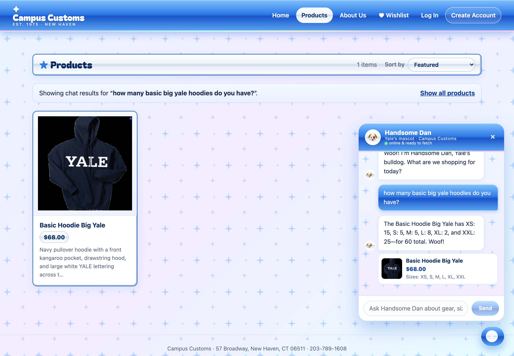
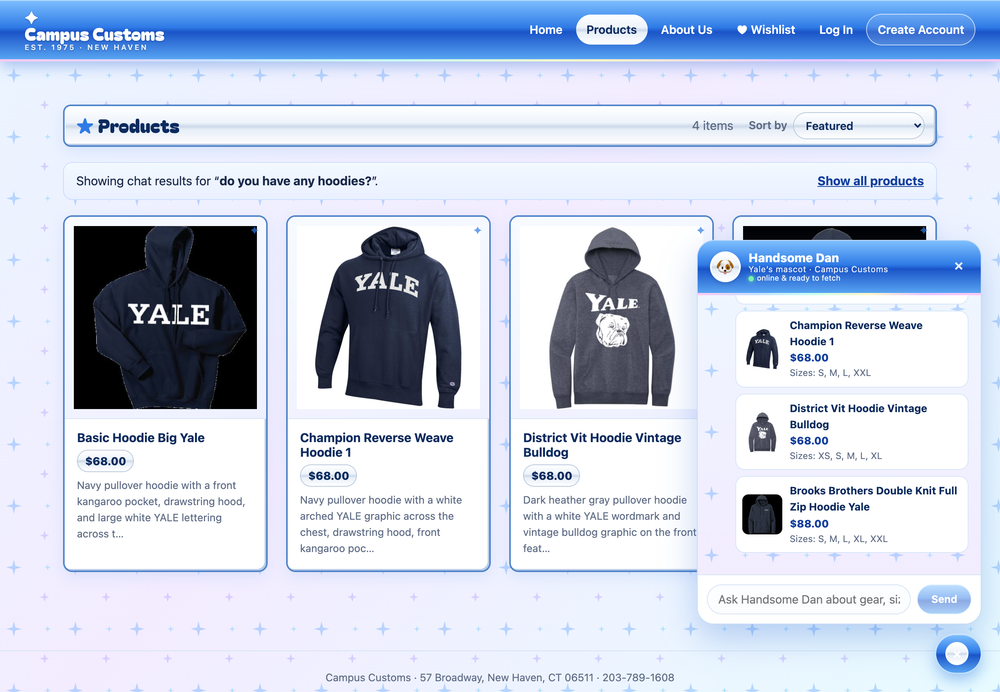
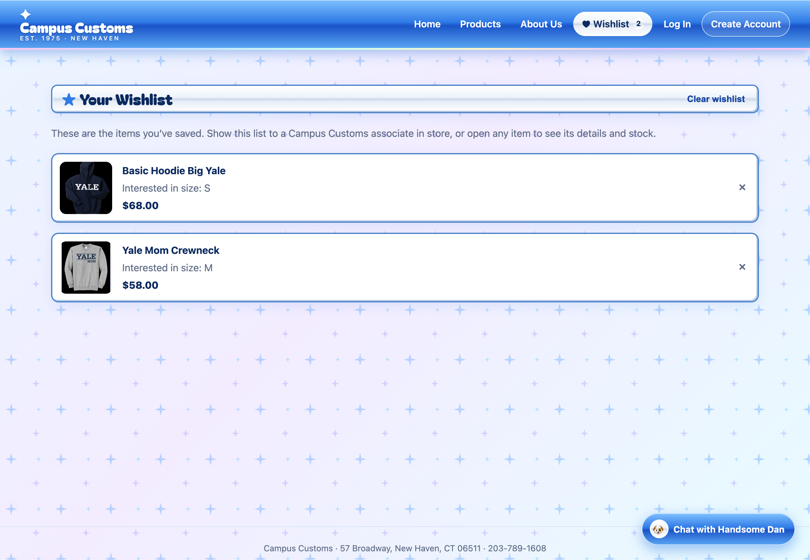

★ Campus Customs — App Check
Three tested scenarios, with screenshots and results.
1. Inventory level of an item through chat

Result: Handsome Dan reported the correct in-stock sizes for the item, matching the database.
2. Dynamic search results after asking for hoodies

Result: Asking for hoodies filtered the Products page to matching items instantly.
3. Wishlist (usability addition from Problem 9)

Result: Saved items appeared on the Wishlist page and persisted after reload.